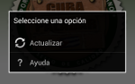

¿Cómo usar CubaPaladar App?
Desde la pantalla de inicio, usted podrá encontrar todas las funcionalidades que le brinda la aplicación.
Comenzando por las funcionalidades de la parte superior.
 Actualizar
Mediante esta interfaz, usted podrá indicar dónde tiene ubicado los datos y mapa de la aplicación.
Además si posee conectividad con nuestro portal, al hacer touch sobre el botón actualizar dispondrá de lo más reciente que le ofrece CubaPaladar.
En la parte inferior encontrará diferentes atajos que le facilitarán lo que desea encontar.
Ver los restaurants ordenados por el ranking de Cuba Paladar.
Ver los restaurants ordenados por el ranking de Popularidad.
Desarrollado por Juan Daniel Santana Rodés
juandanielsantana@gmail.com